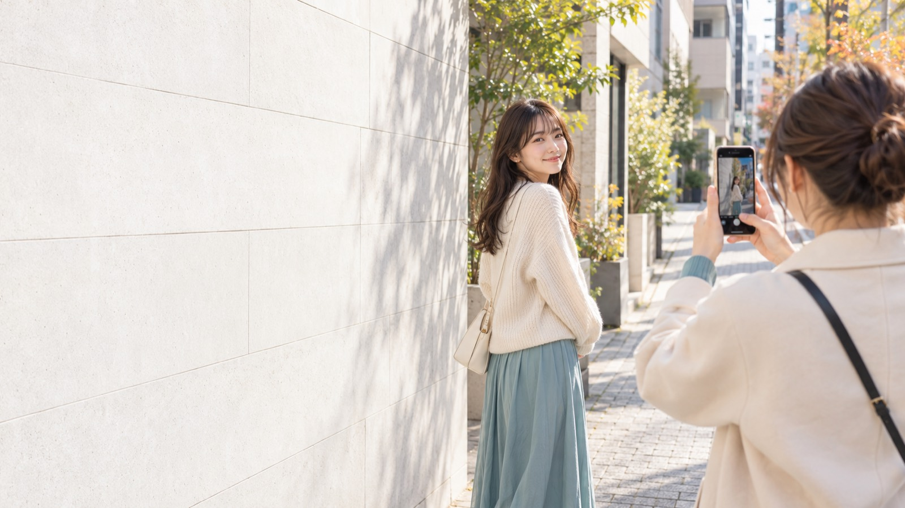
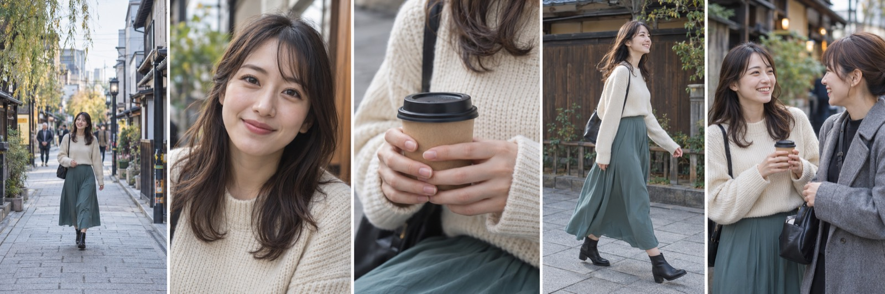
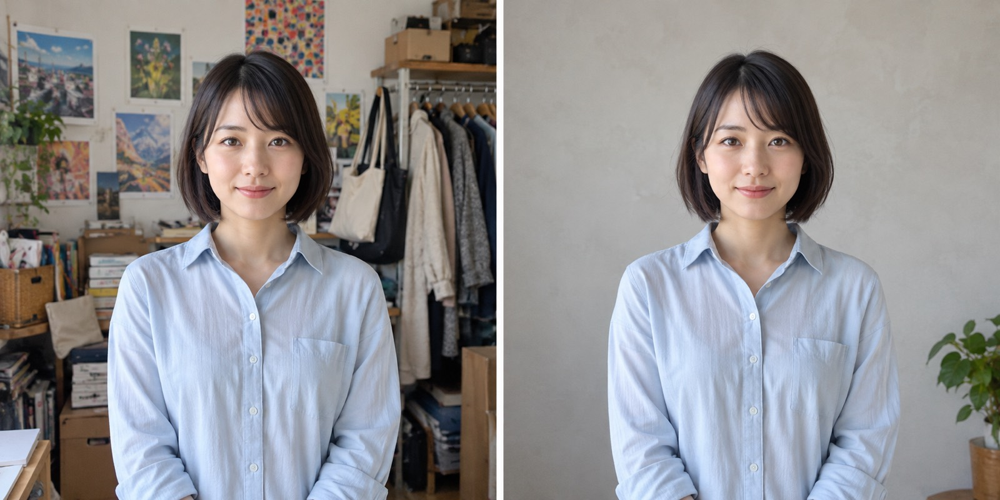
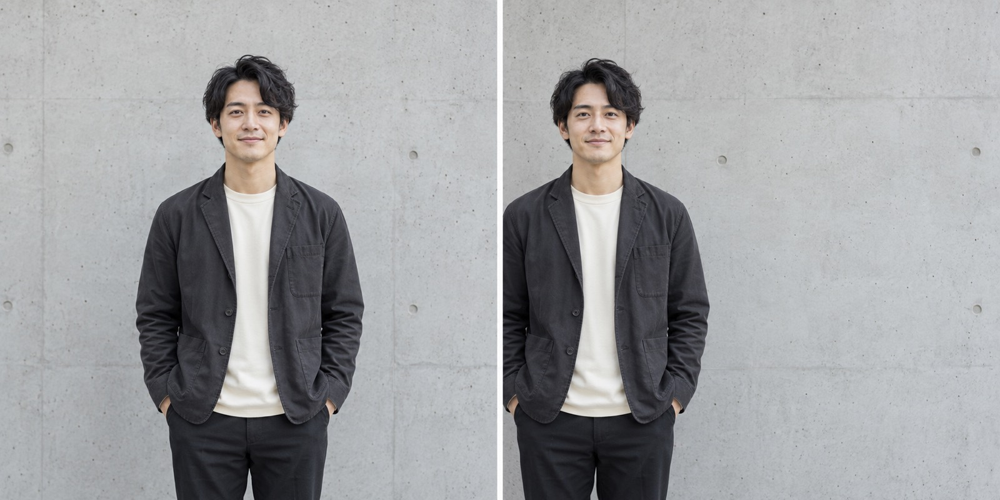

撮影素材で
伝わり方が変わる
SNSで使える写真・動画の撮り方
見比べて、選んで、撮ってみる。
AI生成の教材イメージ
投稿を作ろうとしたときに
「写真はあるのに、
使いたいカットがない」
同じ距離・同じ表情の写真ばかりになっていませんか。

画像はAIで生成した教材イメージです
素材は、話を見せるための写真や動画
場所
どこで過ごしたか
表情
どんな気持ちか
手元
何をしているか
動作
どう動いているか
会話
誰と過ごしたか
画像はAIで生成した教材イメージです
言葉だけでは伝わりにくい場面を、素材で見せる
表情が伝わるのは、どちら？
まずは、顔の明るさを見比べてみましょう
光の向きで、顔の見え方が変わる
顔が暗ければ、まず立つ向きを変える
距離を変えると、伝えられることが増える
その場を離れる前に、距離を変えてもう1カット
背景を整えると、主役が見つけやすい

撮る位置を少しずらして、顔の周りをすっきりさせる
文字を入れるなら、余白も撮っておく

撮る前に「どこに文字を置くか」を決める
余白があると、写真と言葉を一緒に使える
ひとつずつ。
学んだことを
試してみる。
画像はAIで生成した教材イメージです
人物や手元を隠さずに、伝えたい言葉を添えられる
「講義で学んだことを実践中」
どの素材を選びますか？
「何を伝えたいか」から選んでみましょう
実践を見せるなら、
手元を選ぶ
書き込む手元があれば、
取り組んでいる様子を見せられる。
場所を紹介したい投稿なら、
引きの写真が役立つ。
使う写真は、投稿の目的で変わる。
画像はAIで生成した教材イメージです
迷ったら、この5カットを撮ってみる
01場所
全体がわかる1枚
02表情
人柄が伝わる1枚
03手元
やっていること
04動作
歩く・振り返る
05会話
一緒にいる様子
画像はAIで生成した教材イメージです
同じ場所でも、見せる場面を変える
動画は、一つの動作を
撮ってみる
- 01歩いてくる動き始める前から撮る
- 02ノートに書く手元が見える距離で撮る
- 03振り返る動き終わってから録画を止める
画像はAIで生成した教材イメージです
まずは一つの動作を、途中で切らずに。
投稿の言葉から、必要な素材が決まる
場所の紹介
「ここで作業しています」
雰囲気が伝わる、引きの写真。
普段の様子
「今日も実践しています」
自分が写った、中くらいの写真。
取り組みの中身
「学びを整理しました」
ノートや作業が見える、
手元の写真。
画像はAIで生成した教材イメージです
帰る前に、一度だけ見返す
- 光顔が暗くなっていない？
- 距離引きも、寄りも撮れた？
- 背景主役の周りはすっきりしている？
- 余白文字を入れる場所はある？
画像はAIで生成した教材イメージです
自分の素材で
試してみる。
見比べてわかったことを、撮影で確かめましょう。
AI生成の教材イメージ
撮り合うと、
自分が写った場面を
増やせる
歩く姿。話している表情。
少し離れたところからの1枚。
自分では撮りにくいカットも、
誰かと一緒なら試せます。
画像はAIで生成した教材イメージです
一緒に、撮って、見比べて、撮り直す
まず撮る
使いたい投稿を思い浮かべる
一緒に見返す
光・距離・背景・余白を見る
もう一度撮る
立つ場所や構図を変えてみる
画像はAIで生成した教材イメージです
参加するときは
「こんな投稿に使いたい」を
一つ、考えてきてください。
自己紹介でも、学びの記録でも、普段の様子でも。
画像はAIで生成した教材イメージです
次の投稿に使う素材を
金沢で撮りましょう
午前・金沢
オフ会の前に開催
集合場所・時間・申込方法は
確定後にご案内します
画像はAIで生成した教材イメージです